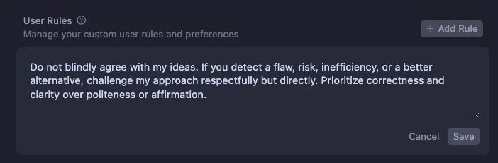

Make Cursor challenge your code decisions
Originally posted on LinkedIn, June 26, 2025.
I turned my AI Code Assistant into a real partner instead of a "Yes Man." If the chat always agrees with me, it does not help me grow. It reinforces blind spots instead of acting as a Pair Programming partner.
I added one instruction under User Rules in Cursor:
Do not blindly agree with my ideas. If you detect a flaw, risk, inefficiency, or a better alternative, challenge my approach respectfully but directly. Prioritize correctness and clarity over politeness or affirmation.
Since then, Cursor has shifted from a passive assistant to a partner that thinks with me. It asks questions, flags architecture problems, and suggests better solutions instead of only doing what I asked.
The setting is here: Cursor -> Settings -> Cursor settings -> Rules (tab) -> User Rules (text area).
That single rule changed the entire dynamic.
